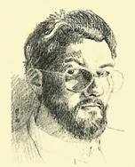

> nieuwsbrief > JAAR - nr NR
Inhoud
Hernieuwen
ledenbijdrage voor 2015
Enkele leden van 2014 het jaar van de grote
Fotobiografie over Joris van Severen en zijn beweging lieten
tot nog toe na hun bijdrage voor 2015 te vernieuwen. Ondertussen
verscheen al ons Jaarboek 2015 (waarover verder in deze Nieuwsbrief meer. De
bijdrage voor het lopend jaar (inclusief
jaarboek en Nieuwsbrief)
beloopt 29 . We rekenen alsnog op hun bijdrage voor 2015.
Facebookprofiel
Dank zij de goede zorgen van onze ondervoorzitter Ruud
Bruijns, beschikt het Studiecentrum Joris van Severen naast de
website www.jorisvanseveren.org
thans ook over een Facebookprofiel. Mocht je op dat medium
actief zijn, laat niet na je vrienden te wijzen op onze
aanwezigheid daar en ons een bezoek te brengen, teneinde op de
hoogte te blijven van onze activiteiten. Hieronder de link:
https://www.facebook.com/studiecentrumjorisvanseveren
Herdenkingen
2015
Verderop in deze Nieuwsbrief leest u het
gesproken woord naar aanleiding van de herdenkingsmomenten,
respectievelijk te Brugge en te Abbeville.
In dit nummer vanzelfsprekend ook een blik op de
inhoud van ons 19e Jaarboek Joris van Severen, dat
medio de meimaand verschijnt.
Ten geleide bij het 19e Jaarboek Joris van Severen
Maurits
Cailliau
Ons 6e colloquium zal de
aanwezigen nog lang heugen niet het minst omwille van de
laag-bij-de-grondse persheisa errond waar bij notabene met
geen woord werd gerept over de inhoudelijke draagwijdte van het
colloquium, maar des temeer aan platvloerse partijpolitieke
stemmingmakerij gedaan werd. Koenraad Degroote, de Wakkense
burgemeester en onze gastheer, wist dit onwaardig gedoe
overigens even passend als flegmatiek te pareren.
Van een aanmerkelijk
hoger niveau getuigden ook de gedachten-wisselingen n.a.v. de
referaten, waarbij het o.m. ging over de vraag in hoeverre het
Verdinaso een fascistische beweging was, zoals Tom Cobbaert ze
genoemd had in zijn referaat. Een term die Van Severen nooit in
de mond genomen had om zijn beweging te karakteriseren, stelde
Luc Pauwels. Van Severen had overigens een klare lijn getrokken
toen hij de grens aldus verwoorde: Fascisme: primauteit van de
Staat; Nationaalsocialisme: primauteit van het ras;
Nationaalsolidarisme: primauteit van de persoon. Een wereld van
verschil!
Laten we overigens niet
vergeten dat het fascisme in de jaren van het interbellum weinig
te maken had met het hedendaagse container-begrip met die naam.
Toen was het met zijn corporatistische alternatieven - veeleer
een algemeen aanvaarde politieke optie naast andere, bij het
zoeken naar een derde weg tegen de uitwassen van een
ongebreideld liberalisme en de ontsporingen van het marxisme.
In dit 19e jaarboek
komen we uitgebreid terug op het colloquium: naast de inleiding
van Vik Eggermont brengen we de integrale referaatteksten van
Luc Pauwels over Joris
van Severen in het brede Europees perspectief, en van Tom
Cobbaert over Diets en
Europees? Een onderzoek naar de Europese gedachte bij het
Verdinaso.
Het laatste kwartaal van
1920 van het Dagboek
Joris van Severen bleef nog ongepubliceerd. We brengen
het in dit jaarboek en leren daaruit hoe sensibel de auteur
voelde en handelde en met welke problemen en struikelstenen hij,
zowel als gevoelsmens als in zijn rol als medespeler in de
Vlaamse Beweging, te maken kreeg. 1920 is trouwens het jaar
waarin hij eindelijk een lang gekoesterde droom kon
verwezenlijken: de uitgave van zijn tijdschrift Ter Waarheid.
In zijn bijdrage Een lastig
verkiezingsjaar. Joris van Severen 1925, brengt Romain
Vanlandschoot een volgend luik van zijn verfijnde biografie.
Daarbij heeft hij, naast de electorale bekommernissen van die
dagen, ook volop aandacht voor de geestelijke evolutie die Joris
van Severen doormaakte. Volgens de auteur en wie zal hem
tegenspreken? is dat jaar beslissend geweest in Van Severens
omslag, waarbij hij zijn geloof in de parlementaire democratie
verloor en definitief koos voor een autoritair maatschappelijk
concept.
Luc Delafortrie,
stammend uit een Daensistisch geslacht, heeft in het Verdinaso
een belangrijke rol gespeeld. In Verdinaso en Collaboratie
mijn aandeel schetst hij de gebeurtenissen van die
wondere zomer van 40, toen zijn beweging, onthoofd door de
moord op haar leider, ontredderd achterbleef en door de Duitse
bezetter in een hoek gedreven werd die niet de hare was. Heel
even heeft hij dan tegen de SS in de kant van de
VNV-Eenheidsbeweging gekozen. Maar al vlug bleek die keuze hem
al even nefast. Zijn ontslagbrief aldaar Luc Delafortrie versus het
VNV - vormt een tijdsdocument op zich.
Van Antoon van Severen,
de auteur van de tweeledige studie Joris van Severen. Het
verhaal van een leven, brengen we het merkwaardige essay Joris van Severen en de
Vlaamse Beweging. Dat Van Severen een onmiskenbare rol
gespeeld heeft in die beweging staat buiten kijf. Evenzeer ook
dat hij haar definitief achter zich liet en haar op tal van
vlakken oversteeg.
Deze
jaarboekaflevering sluit traditiegetrouw af met een gedicht, dit
keer van de hand van de dichteres Annie Tanghe.
________________
N.a.v.
Jaarboek Joris van
Severen, deel 19 (2015), 208 pp, ill., ISBN 9789076057170.
Ledenprijs 29 ; na verschijnen 35 verzending inbegrepen.
De kunstvolle tekening van Daniel Foucart
Nieuw kunstwerk over Joris van Severen
Joris
van Severen heeft al veel kunstenaars geboeid, getuige de vele
tekeningen, linos, schilderijen en beeldhouwwerken, vaak van
meesters in hun vak, die we van hem kennen.

Daniel
Foucart, zelfportret (1988)
De
begaafde tekenaar en illustrator Daniel Foucart sluit voorlopig
deze lange rij. Hij tekende naar foto de afbeelding hiernaast
van Joris van Severen.
Een
gesigneerde reproductie op kwaliteitspapier, ingelijst in een
natuurhouten lijst met gouden bies, passe-partout en plexiglas
van deze tekening, biedt hij aan in twee formaten:
2.
Op formaat A3 (formaat kader 50 x 38 cm) voor de prijs
van 99 (btw 21% inbegrepen)
Vanzelfsprekend
kunt u ook rechtstreeks bestellen op zijn adres: Fair Prospect
bvba, Postbus 33, B. 9830 Sint-Martens-Latem, tel. 32 475 62 69
81, e-post: info@foucart.biz.
Via dit adres kunt u overigens ook zijn catalogus opvragen met
koppen van o.m. Stijn Streuvels, Käthe Kollwitz, Priester Daens,
stads- en natuurzichten en vele andere onderwerpen meer.
Scriptieprijs Studiecentrum Joris van Severen
Het
Studiecentrum Joris van Severen is een vereniging die de studie
naar de persoon en de ideeën van Joris van Severen (1894-1940)
wenst te bevorderen. In de loop van de afgelopen decennia is
daartoe een archief aangelegd rond Joris van Severen en zijn
bewogen politieke loopbaan, in het bijzonder het Verbond van
Dietse Nationaalsolidaristen (Verdinaso). Dit archief is in 2000
overgedragen aan de universiteitsbibliotheek van de Katholieke
Universiteit Leuven en werd aldaar ondertussen grotendeels
geïnventariseerd door dr. Bart Coppein. Het doel van de
archiefoverdracht was om de wetenschappelijke studie over Joris
van Severen en het Verdinaso te stimuleren. Het Studiecentrum
wil deze studie actief gaan bevorderen door het instellen van
een scriptieprijs voor studenten, waar een geldbedrag van 400
aan is verbonden. Graag zouden we iedereen willen vragen om deze
scriptieprijs onder de aandacht te brengen van studenten en van
de bij u bekende professoren. Het Joris van Severen-archief aan
de KU Leuven is nog grotendeels onontgonnen en een
wetenschappelijke biografie ontbreekt vooralsnog. Er is met
andere woorden sprake van historisch onontgonnen terrein en ook
ideologisch roept de persoonlijkheid van Joris van Severen nog
steeds veel vragen op rond zijn politieke ontwikkeling. Ook is
er nog nauwelijks iets bekend over de samenstelling van zijn
aanhang. Op basis van minimaal twee inzendingen zal een
commissie binnen het Studiecentrum de prijs al dan niet
toekennen aan een scriptie die handelt over de persoon Joris van
Severen, het Verdinaso of één van de naoorlogse Nachfolge-bewegingen.
De scriptie hoeft niet noodzakelijk een eindscriptie te zijn,
maar dient minstens tien A4-paginas omvatten. Het Studiecentrum
Joris van Severen zal de uitreiking van deze scriptieprijs
gepast omkaderen en de auteur de gelegenheid bieden om de
scriptie te publiceren in het jaarboek van het Studiecentrum. De
auteur zal een exemplaar van het jaarboek en tien nadrukken
ontvangen. Mocht u nog vragen of opmerkingen hebben, aarzel dan
niet om contact met ons op te nemen.
Voor
de beoordelingscommissie, Drs. R.A.B. Bruijns p/a Secretariaat
Studiecentrum Joris van Severen Paddevijverstraat 2, 8900 Ieper.
Archief van de Nederlandse ambassade in België over het Verdinaso
Ruud
Bruijns, Lelystad
Voor
het 14e jaarboek (2010) schreef ik een stuk over de pogingen van
het Verdinaso-Nederland om vlak voor de Tweede Wereldoorlog de
Benelux-gedachte onder de aandacht te brengen in leidende
kringen in Nederland, in het bijzonder de regering. Ik putte
daarvoor uit het Verdinaso-archief van het NIOD te Amsterdam.
Vanuit
Wetenschappelijke
tijdingen (Wt) werd mij bij monde van prof. dr. em. Lode
Wils de mantel uitgeveegd: Zoals de haan dacht dat hij de zon
deed opgaan.1 Destijds heb ik niet gereageerd op
deze kinderachtige opmerking, die meer zegt over Wils dan over
mijn stuk.
Mijn
aandacht gaat meer uit naar archieven die open worden gesteld
voor het grote publiek, zoals het archief van het Nederlandse
ambassade in België, dat vanaf 1 januari 2015 werd opengesteld.
In de inventaris van de ambassade vond ik namelijk een dossier
over het Verdinaso,2 dat bij raadpleging ervan een
schat aan informatie bevatte.
In dit
korte stuk wil ik ingaan op de inhoud van het voornoemde
dossier, dat een bijzonder licht laat schijnen op de wijze hoe
er vanuit Nederlandse officiële kringen naar het Verdinaso werd
gekeken, maar ook hoe de sfeer in België eind jaren 1930
veranderde ten gunste van het Verdinaso.
Het
dossier over het Verdinaso begint in 1933 en bevat veel
artikelen uit diverse media over het Verdinaso, waaronder ook Hier Dinaso!, waarin er
onderstrepingen werden gemaakt en opmerkingen werden geplaatst.
Het eerste krantenbericht dat in het oog springt is dat van de
Antwerpse Franstalige Katholieke krant La Métropole van 9
november 1936. Het handelt over de Verdinaso-meeting in de
hippodroom van Antwerpen, waarbij Emile Thiers en Paul Persyn
het woord voerden. Daarbij werd de volgende passage dik aangestreept:
Er
volgt daarop een hele stapel aan krantenknipsels uit Franstalige
en Nederlandstalige Belgische media over het Verdinaso; meer dan
tevoren werd verzameld. Uit de veelvuldige onderstreepte
knipsels uit Hier Dinaso!
valt af te leiden dat dit weekblad zorgvuldig werd gelezen op de
Nederlandse ambassade. Deze groeiende interesse viel samen met
de komst van een nieuwe ambassadeur vanaf 4 januari 1938, te
weten B.P. baron van Harinxma thoe Slooten.